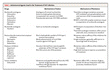
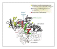

Review Article
Medical Progress
HIV Drug Resistance
N Engl J Med 2004; 350:1023-1035March 4, 2004DOI: 10.1056/NEJMra025195
- Article
- References
- Citing Articles (4)
- Letters
The use of combinations of antiretroviral drugs has proven remarkably effective in controlling the progression of human immunodeficiency virus (HIV) disease and prolonging survival,1 but these benefits can be compromised by the development of drug resistance.2,3 Resistance is the consequence of mutations that emerge in the viral proteins targeted by antiretroviral agents. In the United States, as many as 50 percent of patients receiving antiretroviral therapy are infected with viruses that express resistance to at least one of the available antiretroviral drugs.4 Consequently, the transmission of drug-resistant strains is also a growing concern.5-7 Because drug-resistant HIV often exhibits resistance to several classes of antiretroviral drugs8 and because cross-resistance between drugs within a class is frequent,9-12 the emergence of resistance always complicates further efforts to control viral replication. This review focuses on the mechanisms underlying the selection of drug-resistant HIV and on the consequences of viral resistance with respect to the evolution of HIV infection.
Principles of Drug Therapy for HIV
The drugs currently used to treat HIV type 1 (HIV-1) infection (Table 1Table 1Antiretroviral Agents Used in the Treatment of HIV Infection.) belong to four distinct classes: nucleoside and nucleotide analogues, which act as DNA-chain terminators and inhibit reverse transcription of the viral RNA genome into DNA, a crucial event occurring at an early stage of the viral life cycle; nonnucleoside reverse-transcriptase inhibitors, which bind and inhibit reverse transcriptase, the viral enzyme that conducts reverse transcription; protease inhibitors, which target the viral protease, the enzyme required for the cleavage of precursor proteins (gag and gag–pol), permitting the final assembly of the inner core of viral particles; and entry inhibitors, which block the penetration of HIV virions into their target cells. Combinations of antiretroviral drugs are now used for the treatment of HIV infection — so-called highly active antiretroviral therapy (HAART). Current HAART regimens generally comprise three antiretroviral drugs, usually two nucleoside analogues and either a protease inhibitor or a nonnucleoside reverse-transcriptase inhibitor.13 The use of agents from different classes is instrumental in controlling the development of resistance, but whereas some drug combinations have been shown to be antagonistic, there is no evidence that any combinations of currently available drugs are strongly synergistic in vitro.
Development of Resistance
Induced Resistance
Two concepts are important to an understanding of the development of drug resistance. First, HIV infection is characterized by high levels of virus production and turnover. In most untreated patients, the total number of productively infected cells in the lymphoid tissue has been estimated to be approximately 107 to 108 cells.14 During the chronic phase of HIV infection, this number is relatively stable, reflecting the balance between the infection of new target cells and their clearance. Because the half-life of infected cells is remarkably short (one to two days), the maintenance of this steady state requires that HIV infect new target cells at a very high rate.15-17 Second, the viral population in an infected person is highly heterogeneous.18 The reverse transcription of viral RNA into DNA is notoriously prone to error,19,20 introducing on average one mutation for each viral genome transcribed. Most of these errors are base substitutions, but duplications, insertions, and recombination can also occur. The high rate of HIV infection, combined with the high mutation rate that occurs during each cycle of infection, ensures that patients have a complex and diverse mixture of viral quasispecies, each differing by one or more mutations.
Under these circumstances, it is easy to understand why if any of these mutations can confer some selective advantage to the virus, such as a decrease in its susceptibility to an antiretroviral agent, the corresponding quasispecies will overtake the others, following a simple darwinian selection process. The rapidity of this process depends on the level of the selective advantage conferred by the mutation, the prevalence of the mutant within the virus population, and the level of drug at the site of HIV replication. In some cases, substitutions of single amino acids can produce high levels of resistance. Since minority viral quasispecies carrying any single mutation are believed to exist even before treatment is started,21 the emergence of these highly resistant single mutants can occur in a matter of weeks. For other agents, only low-level resistance can be induced by single mutations. In these cases, high levels of resistance or complete resistance requires the gradual accumulation of additional mutations.
Combination therapy can block this selection process for two reasons. First, multiple mechanisms (each requiring different mutations) are required for resistance to occur to all drugs in the regimen. Even if a small number of variants with the potential for resistance to individual agents exist before treatment, it is highly unlikely that some of these variants are able to resist all the drugs. Second, multiple drugs suppress viral replication more effectively than single agents.22,23 In the absence of ongoing viral replication, the generation of new variants is also arrested. In patients who receive HAART as a first line of antiretroviral therapy, the emergence of viral resistance is possible only if HIV continues to replicate in the presence of levels of drugs that are insufficient to block viral replication but sufficient to exert a positive selective pressure on variants with decreased drug susceptibility. Under these conditions, viruses with resistance to all the components of the regimen will gradually emerge. Thus, it is worth emphasizing that in the context of HAART, resistance is most often the consequence — not the cause — of initial treatment failure. Once resistance begins to develop, however, a vicious circle of increasing treatment failure and increasing levels of resistance can lead to situations in which it becomes impossible to control viral replication with currently available drugs.
Primary Resistance
Patients primarily infected with HIV strains that exhibit resistance to zidovudine were identified as early as 1993, six years after zidovudine was introduced as the first antiretroviral drug active against HIV.24 Since HAART became available in 1996, a number of reports have described the transmission of HIV strains with resistance to single or multiple antiretroviral drugs.5-7 The prevalence of primary HIV resistance appears to be quite variable in different communities, but there is a trend toward an increase.6,7 Although most such cases involve the transmission of strains of HIV-1 from patients in whom resistance has developed during therapy, some strains of HIV are naturally resistant to some antiretroviral drugs. For example, HIV type 2 (HIV-2) is intrinsically resistant to most nonnucleoside reverse-transcriptase inhibitors.25 Similarly, some subtypes of HIV-1 can be less susceptible to protease inhibitors or nonnucleoside reverse-transcriptase inhibitors than the subtype B strains that are prevalent in the United States and Europe.26-29 More information is needed on the natural susceptibility of non-B subtypes and on the patterns of resistance mutations that occur in these strains, which can differ from those observed with subtype B. Because non-B subtypes are dominant in Africa and Asia, particular care in the choice of antiretroviral regimens must be exercised in those regions.
Mechanisms of Resistance
Considerable progress has been made in identifying mutations associated with drug resistance (Table 2Table 2Mutations Involved in Resistance of HIV to Nucleoside Analogues, Nonnucleoside Reverse-Transcriptase Inhibitors (NNRTIs), and Protease Inhibitors.) and in understanding the mechanisms through which they confer resistance (Table 1). A variety of mechanisms have been identified that differ both for different classes of drugs and for drugs of a given class. The locations of drug-resistance mutations in reverse transcriptase and in protease are shown in Figure 1Figure 1Complex of HIV-1 Reverse Transcriptase with an RNA–DNA Duplex. and Figure 3AFigure 3
 HIV-1 Protease Dimer Binding with a Protease Inhibitor (Panel A) and a Drug-Sensitive (Wild-Type) Protease Juxtaposed against a Drug-Resistant Protease (Panel B)., respectively.
HIV-1 Protease Dimer Binding with a Protease Inhibitor (Panel A) and a Drug-Sensitive (Wild-Type) Protease Juxtaposed against a Drug-Resistant Protease (Panel B)., respectively.Resistance to Nucleoside and Nucleotide Analogues
Nucleoside analogues and nucleotide analogues (Table 1) arrest the synthesis of viral DNA by reverse transcriptase. After phosphorylation by cellular kinases, these compounds are incorporated by reverse transcriptase into the nascent chain of viral DNA. Because these drugs lack a 3' hydroxyl group, no additional nucleotides can be attached to them, and the synthesis of viral DNA is arrested. Two distinct mechanisms are involved in HIV resistance to these drugs: impairment of the incorporation of the analogue into DNA and removal of the analogue from the prematurely terminated DNA chain.
Impairment of Analogue Incorporation
Several mutations or groups of mutations in reverse transcriptase can promote resistance by selectively impairing the ability of reverse transcriptase to incorporate an analogue into DNA (Figure 2AFigure 2The Two Principal Mechanisms of Resistance of HIV to Nucleoside Analogues.). They essentially include the M184V mutation, the Q151M complex of mutations, and the K65R mutation (Table 2).
The M184V mutation involves the replacement of methionine by valine at position 184 of the reverse transcriptase and is the main mutation that confers resistance to lamivudine.31 Methionine 184 is located at the heart of the catalytic site of reverse transcriptase, and its replacement by a valine, which has a different side chain, interferes with the proper positioning of lamivudine triphosphate within the catalytic site (Figure 1 and Figure 2A).32 The M184V mutation induces very high levels of resistance to lamivudine. When lamivudine is used as a single agent, resistant strains overtake wild-type virus in a few weeks,33 and when lamivudine is used as part of a failing regimen of HAART, the M184V mutation is almost always the first mutation to emerge.34,35
The group of mutations referred to as the Q151M complex36 (Table 2) is most often selected for in the course of the failure of regimens containing stavudine and didanosine. This pathway always starts with the Q151M substitution, a residue located in the immediate vicinity of the nucleotide-binding site of reverse transcriptase, and is followed by the gradual accumulation of secondary mutations that enhance resistance and increase the activity of the enzyme.37 The Q151M complex is relatively rare in HIV-1 (fewer than 5 percent of all HIV strains with resistance to nucleoside analogues) but can confer high-level resistance to most — but not all (e.g., lamivudine and tenofovir) — analogues.36 Interestingly, the Q151M complex is markedly more frequent in HIV-2 than in HIV-1.
The K65R mutation is seen with increasing frequency in patients in whom therapy with nucleoside or nucleotide analogues fails, especially when the regimen includes tenofovir or abacavir. This mutation appears to confer resistance to most analogues, with the exception of zidovudine.
Removal of the Analogue from the Terminated DNA Chain
Removal of the nucleoside analogue from the terminated DNA chain is associated with a group of mutations commonly termed “thymidine analogue mutations” (Table 2). Mutations from this group are most frequently selected for after the failure of drug combinations that include thymidine analogues, such as zidovudine and stavudine, but they can promote resistance to almost all nucleoside and nucleotide analogues, including tenofovir.38-41 These mutations occur gradually, and their order of emergence can vary.10,42 Thymidine analogue mutations promote resistance by fostering ATP- or pyrophosphate-mediated removal of nucleoside analogues from the 3' end of the terminated DNA strand (Figure 2B).43,44 ATP and pyrophosphate, which are abundant in normal lymphocytes, do not participate in the DNA-polymerization reaction, but the structure of a reverse transcriptase expressing thymidine analogue mutations facilitates their entry into a site adjacent to the incorporated analogue.45,46 In this position, ATP or pyrophosphate can attack the phosphodiester bond that links the analogue to DNA, resulting in removal of the analogue (Figure 2B). Interestingly, the efficiency of this process, also known as “primer rescue,” can be significantly decreased by the presence of other mutations in reverse transcriptase, a phenomenon that has been best described in the case of the M184V mutation.47 As a consequence, M184V slows the selection of thymidine analogue mutations by thymidine analogues41 and may slightly increase the residual antiviral activity of some nucleoside analogues in spite of the presence of thymidine analogue mutations.
Resistance to Nonnucleoside Reverse-Transcriptase Inhibitors
Nonnucleoside reverse-transcriptase inhibitors are small molecules that have a strong affinity for a hydrophobic pocket located close to the catalytic domain of the reverse transcriptase (Figure 1 and Figure 4Figure 4Mechanism of Resistance of HIV to Nonnucleoside Reverse-Transcriptase Inhibitors.). The binding of the inhibitors affects the flexibility of the enzyme, thereby blocking its ability to synthesize DNA.48 The mutations that are selected for after the failure of treatment with nonnucleoside reverse-transcriptase inhibitors are all located in the pocket targeted by these compounds, and they reduce the affinity of the drug.48-53 Because of subtle differences in the interaction between various nonnucleoside reverse-transcriptase inhibitors and the hydrophobic pocket,51 however, the mutations that emerge most frequently are somewhat drug-dependent (Table 2). Resistance to nevirapine is often associated with the Y181C mutation, but other mutations, such as Y188C, K103N, G190A, and V106A, also occur. Initial resistance to efavirenz is generally characterized by the K103N mutation, but the Y188L mutation is also seen.
Resistance to Protease Inhibitors
The HIV protease cleaves large polyprotein precursors at specific sites, releasing the structural proteins and enzymes necessary for the assembly of infectious viral particles. In the absence of a functional protease, viral particles are produced, but they are immature and are not infectious. The protease of HIV is a symmetrically assembled homodimer with a central, symmetric, substrate-binding cavity (Figure 3A). Detailed knowledge of the structure of this domain and of the structure of the natural protein substrates of the enzyme has led to the design of specific inhibitors whose chemical structure mimics that of the viral peptides that are normally recognized and cleaved by the protease.54,55 These compounds display a strong affinity for the active site of the HIV protease and inhibit the catalytic activity of the enzyme in a highly selective manner.
Resistance to protease inhibitors is the consequence of amino acid substitutions that emerge either inside the substrate-binding domain of the enzyme or at distant sites56-58 (Table 2 and Figure 3A). Directly or indirectly, these amino acid changes modify the number and the nature of the points of contact between the inhibitors and the protease, thereby reducing their affinity for the enzyme.59-62 As an example, the common resistance mutation V82A reduces the size of an amino acid residue in the protease that is more important for binding most inhibitors than for binding the natural viral protein substrate (Figure 3A).62 Protease inhibitors have been designed to bind the protease with maximal affinity and tend to occupy more space inside the active site cavity than do natural substrates. Unlike the inhibitors, the natural substrates of the protease have a variable, but generally less tight, interaction with the catalytic site, a phenomenon that promotes the ordered sequential cleavage of the polyproteins required for proper assembly of the viral particle. Resistance mutations in the protease, which result in an overall enlargement of the catalytic site of the enzyme (Figure 3B), would thus be predicted to have a greater effect on the binding of inhibitors than the natural templates.
Some mutations are selected for only by certain protease inhibitors (Table 2), reflecting particularities in the chemical structure of the inhibitors that influence their interaction with the substrate-binding domain of the enzyme. However, there is considerable overlap between the combinations of mutations in HIV strains that develop resistance to protease inhibitors. This overlap explains the wide cross-resistance that is generally observed within this drug class.9,12,63 Remarkably, resistance to protease inhibitors can also be promoted by mutations in some of the natural viral substrates of the protease.64-66 Characteristic substitutions of amino acids near cleavage sites of the gag polyprotein have been identified that can increase the level of resistance and the replicative capacity of the virus by facilitating cleavage under conditions in which the amount of active enzyme is suboptimal or improving the ability of proteases containing resistance mutations to interact with the substrate.
Resistance to Fusion Inhibitors
HIV-1 enters target cells through an intricate sequence of interactions between the HIV envelope glycoprotein (gp) complex (gp120–gp41) and specific cell-surface receptors.67 The early steps in this process allow gp41, the fusogenic component of the complex, to interact with the cell membrane, thereby tethering the virus to its target. The membranes of the virus and target cell are then brought into close proximity, fostering their fusion, by further rearrangement of gp41. In this step, a distal hydrophobic region of gp41, HR2, folds onto a more proximal hydrophobic region, HR1, effectively shortening the molecule. Enfuvirtide, a 36-amino-acid peptide derived from HR2, destabilizes this process by binding to HR1 and blocks the infectivity of HIV-1. Viral resistance to enfuvirtide usually results from mutations located in a stretch of 10 amino acids within HR1.68,69 Interestingly, changes in amino acids in gp41 outside HR1 — and even changes in gp120 — appear to be associated with significant differences in the susceptibility of the virus to enfuvirtide.70,71 These mutations or polymorphisms probably explain the remarkably wide range of natural susceptibility to enfuvirtide among HIV-1 strains70-72 and could participate in the evolution of acquired resistance to enfuvirtide.
Cross-Resistance
Cross-resistance, defined as resistance to drugs to which a virus has never been exposed, results from mutations that have been selected for by the use of another drug. Cross-resistance is always restricted to drugs within a given class of antiretroviral agents, but all three classes of antiretroviral drugs are affected. Early in the evolution of resistance to nucleoside analogues or protease inhibitors, viruses may have only a low level of cross-resistance to alternative agents within each of these two classes of drugs.10,12 Nevertheless, these strains may need to add only one or a few additional mutations to this preexisting scaffolding for high-level cross-resistance to develop. Therefore, in patients infected with strains that have low levels of cross-resistance, the switch to apparently active alternative drugs can be accompanied by rapid selection for highly resistant variants, at the expense of minimal evolutionary changes.73,74
Evolution of Resistance
Resistance is not an all-or-nothing phenomenon and generally increases over time.10,75,76 Single mutations rarely produce complete resistance to antiretroviral drugs, although the M184V mutation in reverse transcriptase, which results in complete resistance to lamivudine, is an exception to this rule. Single mutations in the hydrophobic pocket of reverse transcriptase also provide strong resistance to nonnucleoside reverse-transcriptase inhibitors, but the viral strains in patients in whom regimens using these drugs are failing often incur additional mutations, suggesting that the level of resistance provided by single mutations is not optimal.50,77
Resistance to reverse-transcriptase inhibitors through the accumulation of thymidine analogue mutations or Q151M complex mutations and resistance to protease inhibitors are always gradual processes, leading to progressive increases in the level of resistance.58,78 Nonetheless, even after several mutations have accumulated in the HIV protease and reverse transcriptase sufficient to produce patent treatment failure, resistance may not have reached maximal levels, and additional mutations, associated with increases in resistance, can occur even in the absence of any changes in treatment.75 Indeed, the development of complete resistance may represent an exception. Because resistance mutations can impair viral replicative capacity, the solution adopted by the dominant viral population may entail making concessions in terms of resistance. Efforts are being made to evaluate the antiviral activity retained by individual drugs in the face of resistance mutations. Such knowledge may help in the treatment of patients infected with viruses that express resistance to multiple classes of drugs, since keeping HIV under some pharmacologic pressure may reduce its pathogenic potential.
Effect of Resistance on Viral Replicative and Pathogenic Capacity
Many resistance mutations impair viral replication. Because these mutations modify key viral proteins, they have deleterious effects of variable extent on protein function. Although some of these deficits can be partially corrected by compensatory mutations,57,79 viruses forced to develop higher levels of resistance under intense and continuous pressure by antiretroviral drugs often have a substantial impairment in their replicative capacity.75 The degree of replicative impairment conferred by resistance mutations is highly variable. The most crippling mutations appear to be those associated with resistance to protease inhibitors,65,80-82 but significant replicative defects can be related to mutations in reverse transcriptase that confer resistance to nucleoside analogues or nonnucleoside reverse-transcriptase inhibitors,83,84 as well as envelope mutations associated with resistance to enfuvirtide.
The clinical effect of resistance-associated loss of viral replicative capacity is the subject of intense investigation. Several observations suggest that resistant viruses have lost some of their virulence. When antiretroviral treatment is interrupted in patients infected with HIV that is resistant to multiple drugs, the resistant strain is more or less rapidly replaced by wild-type virus. This change is accompanied by a drop in CD4 T-cell counts, suggesting that wild-type virus has a greater replicative and pathogenic potential.85 In a significant proportion of patients in whom HAART is failing, the CD4 T-cell counts remain significantly above pretreatment levels, despite the poor control of replication.86-88 Whether this apparent immunologic benefit of HAART in spite of patent virologic failure is the direct consequence of reduced viral pathogenicity, a sign of persistent residual activity of some drugs in the regimen, or both, remains to be elucidated. Consequently, therapeutic strategies that take advantage of resistance-associated loss of HIV replicative capacity have yet to be identified.
Minority and Archived Populations of Virus
The dominant population of resistant virus in the plasma does not always reflect the complex diversity of viral quasispecies in patients in whom HAART is failing. Like the viral populations present in untreated HIV-infected persons,18 those present in patients in whom therapy is failing remain quite heterogeneous.89,90 Minority populations of virus expressing a variety of distinct combinations of resistance mutations are generally present and can continue to evolve.91 Thus, these populations serve as a reservoir for the generation of novel resistance genotypes that can ultimately supplant the previously dominant population. Furthermore, throughout the natural history of HIV infection, viral genomes are continually being archived as latently integrated proviruses in resting cells.92,93 When patients in whom drug resistance has developed are treated with alternative agents for long periods, the mutations associated with resistance to the initially prescribed drugs are often no longer detectable in viruses obtained from plasma samples. Nevertheless, if therapy with these drugs is later resumed, archived resistant strains can reemerge,94,95 as the cells harboring these viruses become activated.
Testing for Drug Resistance
When plasma viral load rises in spite of therapy, it is currently recommended that antiretroviral treatment be changed quickly.96,97 Because cross-resistance between antiretroviral drugs within each class is frequent, changes in treatment cannot be based on the simple assumption that HIV will remain susceptible to alternative drugs within a class that the patient has previously received. In an effort to facilitate the selection of efficacious alternative regimens, resistance tests evaluating the susceptibility of HIV to individual antiretroviral drugs have been developed. Two types of assays are currently available: genotypic assays, which detect the presence of resistance mutations, and phenotypic assays, which measure the susceptibility of the virus to various drugs in tissue-culture systems. A number of retrospective studies have attempted to validate the clinical relevance of the results of resistance tests.97,98 In general, resistance to a drug has been found to be associated with reduced responsiveness of HIV to the drug in vivo, but the finding of apparent susceptibility on resistance testing is a somewhat less reliable predictor of a good response. This common observation can be explained by a number of factors, including the imprecision of some of the assays, the short evolutionary distance required for some initially susceptible viruses to develop full cross-resistance to the new agents if viral replication is not completely suppressed,73,74 the existence of confounding variables such as the pharmacokinetics of individual drugs, and the presence of species of archived or minority viruses with alternative resistance profiles,89-91 which are usually not detected by the assays. Prospective, randomized studies have examined the clinical benefit of drug-resistance testing.97,98 These studies evaluated patients infected with viruses in different stages of the evolution of resistance and have yielded somewhat conflicting results, but most have demonstrated that genotypic testing provides at least a moderate benefit.
Perspectives
As the inevitable consequence of the incomplete suppression of HIV-1 replication by antiretroviral drugs, resistance is a permanent threat for patients who are undergoing antiretroviral treatment, and transmission of resistant viruses is becoming an important concern. Prevention of resistance is a priority that requires unrelenting patient education regarding the risks of resistance and the use of improved drug regimens that ensure optimal tolerance, adherence, and potency. Once established, resistance evolves, diversifies, and may become irreversible. Nonetheless, new drugs are becoming available that appear to retain substantial antiviral activity against HIV-1 strains that are resistant to multiple drugs. These are either drugs from existing classes that have increased potency and improved pharmacokinetic properties or drugs from new classes that are not susceptible to cross-resistance. Although preliminary data indicate that viral resistance to these new drugs can also develop,99,100 the lessons learned about the development of viral resistance to the currently available antiretroviral drugs may prove helpful in devising treatment strategies with optimized antiviral potency that can minimize the development of resistance to these new agents.
Dr. Clavel reports having served as a consultant for GlaxoSmithKline, Bristol-Myers Squibb, and Bioalliance Pharma; holding stock in Bioalliance Pharma; and serving as a lecturer for GlaxoSmithKline, Bristol-Myers Squibb, Roche, and Gilead.
Source Information
From the Unité de Recherche Antivirale, Institut National de la Santé et de la Recherche Médicale, Unité 552, Hôpital Bichat–Claude Bernard, Paris.
Address reprint requests to Dr. Clavel at INSERM, U552, IMEA, Hôpital Bichat–Claude Bernard, 46 rue Henri Huchard, 75018 Paris, France, or at clavel@bichat.inserm.fr.